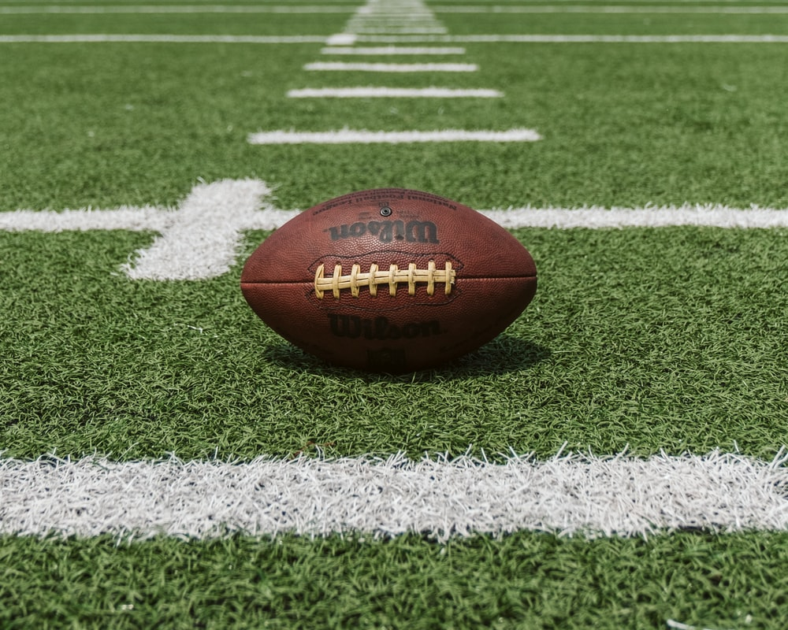
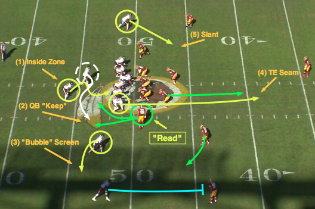
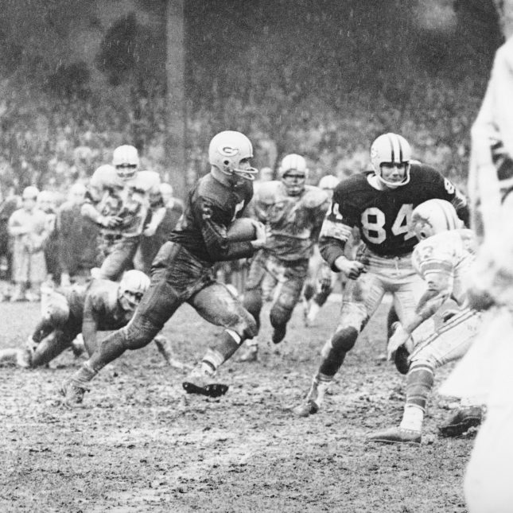
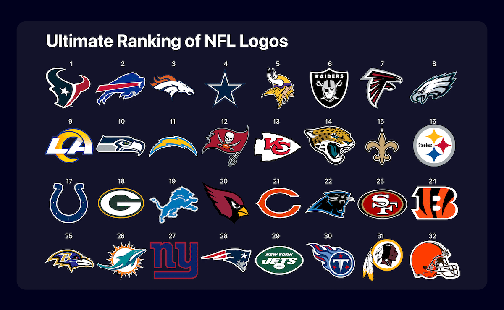

American football, referred to simply as football in the United States and Canada and also known as gridiron, is a team sport played by two teams of eleven players on a rectangular field with goalposts at each end. American football is the most popular sport in the United States. The most popular forms of the game are professional and college football, with the other major levels being high school and youth football. As of 2012, nearly 1.1 million high school athletes and 70,000 college athletes play the sport in the United States annually. The National Football League, the most popular American professional football league, has the highest average attendance of any professional sports league in the world. Its championship game, the Super Bowl, ranks among the most-watched club sporting events in the world. The league has an annual revenue of around US$15 billion, making it the most valuable sports league in the world. Other professional leagues exist worldwide, but the sport does not have the international popularity of other American sports like baseball or basketball.

The offense, the team with possession of the oval-shaped football, attempts to advance down the field by running with the ball or passing it, while the defense, the team without possession of the ball, aims to stop the offense's advance and to take control of the ball for themselves. The offense must advance at least ten yards in four downs or plays; if they fail, they turn over the football to the defense, but if they succeed, they are given a new set of four downs to continue the drive. Points are scored primarily by advancing the ball into the opposing team's end zone for a touchdown or kicking the ball through the opponent's goalposts for a field goal. The team with the most points at the end of a game wins.

American football evolved in the United States, originating from the sports of soccer and rugby. The first American football match was played on November 6, 1869, between two college teams, Rutgers and Princeton, using rules based on the rules of soccer at the time. A set of rule changes drawn up from 1880 onward by Walter Camp, the "Father of American Football", established the snap, the line of scrimmage, eleven-player teams, and the concept of downs. Later rule changes legalized the forward pass, created the neutral zone and specified the size and shape of the football. The sport is closely related to Canadian football, which evolved in parallel with and at the same time as the American game (although their rules were developed independently from those of Camp). Most of the features that distinguish American football from rugby and soccer are also present in Canadian football. The two sports are considered the primary variants of gridiron football.

The biggest league of American Football is the National Football League a.k.a. the NFL. This league is divided into the American Football Conference and the National Football Conference because the NFL combined with the American Football League (AFL). To balance the teams in the leagues, the head officials made this division of 32 teams. In the NFC are the Arizona Cardinals, Atlanta Falcons, Carolina Panthers, Chicago Bears, Dallas Cowboys, Detroit Lions, Green Bay Packers, Los Angeles Rams, Washington, Minnesota Vikings, New Orleans Saints, New York Giants, Philadelphia Eagles, San Francisco 49ers, Seattle Seahawks, and the Tampa Bay Buccaneers. The AFC holds the Baltimore Ravens, Buffalo Bills, Cincinnati Bengals, Cleveland Browns, Denver Broncos, Houston Texans, Indianapolis Colts, Jacksonville Jaguars, Kansas City Chiefs, Las Vegas Raiders, Los Angeles Chargers, Miami Dolphins, New England Patriots, New York Jets, Pittsburgh Steelers, and Tennessee Titans.
The owner of this website is currently attending Handong International School and takes the Computer Programming Course. This website was created in order to finish a midterm assignment which was actually due two days ago. Due to the owner's disheveled thoughts and actions, he went past the due date, and is turning it in today. This site was made on October 17, 2021 and the owner has no idea when it will be updated.